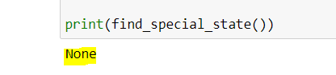
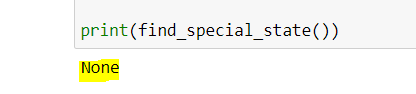

הפונקציה שלך מחזירה None

גם מצאתי את הטעות שלך, זה קשור בסטים שאתה יוצר 
מקווה שזה יסתדר לך

הפונקציה שלך מחזירה None

גם מצאתי את הטעות שלך, זה קשור בסטים שאתה יוצר
מקווה שזה יסתדר לך
אתה צודק, וזה ממש מוזר כי אתמול זה הראה לי משהו אחר…
ביצעתי strip בלולאה על ה-states כדי למחוק רווחים… עכשיו הכל עובד וגם הבודק האוטומטי ריחם עליי
תודה אחי :), בסוף שגעתי את כולם על כלום אבל באמת שזה עבד לי אתמול ! חח
יש מצב שעדיף לבדוק את עצמך כמה וכמה פעמים לפני שמתנסחים בצורה אגרסיבית ולא נעימה.
בדקתי את עצמי שוב היום כשהייתי יותר מרוכז, ואכן טעיתי ולמדתי מזה.
בכל מקרה, אני לא רואה התנסחות אגרסיבית ולא נעימה. אני בעד לפתור בעיות מהשורש, ובמקרה הזה טעיתי וחשבתי ששורש הבעיה הוא בבודק האוטומטי.
אגב, רשמתי את זה כי הצעת הפתרון של אורפז לא נכונה במידה ובאמת הייתה מתגלה טעות בבודק האוטומטי.
במקרה הזה טעיתי, ואין צורך לקחת את זה לפן האישי או הרגשי. לא אמרתי שהבודק האוטומטי דפוק\מיותר.
אם באמת הייתה בעיה בבודק האוטומטי והייתי מטפל במקרה הנקודתי, אז לא הייתם יודעים על הבעיה, וזו הייתה הכוונה הסופית שלי. מקווה שזה יותר מובן
בתרגיל “סוגרים חשבון” (מחברת 2, תרגיל 98) התווספה לי לאחרונה הערה, שלא הייתה קודם, של הבודק לגבי “collection failure”. יש משהו שאני צריך לעשות כדי לסדר את זה או שזה בצד של הבודק?
תודה אביעד! (אם למישהו יהיה את אותה בעיה אז פשוט להוריד את הקריאה לפונקציה מהקוד)
מה שאתה מחזיר זה מה שמצד שמאל של ה-==, מה שאתה אמור להחזיר זה מה שמצד ימין של ה-==. נסה להבין מה ההבדל
לא כל כך הבנתי איך == קשור פה? בפונקציה לא השתמשתי באופרטור ההשוואה:slight_smile:
הבודק האוטומטי מריץ את הפונקציה שלך עם כל מיני קלטים שונים ועורך השוואה בין הערך שהיא מחזירה בפועל לבין הערך שהיא הייתה אמורה להחזיר לפי דרישות התרגיל
== בהודעת הבודק. זה אומר שהוא מנסה לבדוק אם מה שיוצא לו בעזרת ההגשה זה מה שאמרו לו שצריך לצאת
אוקיי הבנתי תודה:slight_smile:
תעביר את הארגומנטים בסדר הבא: מספר, מספר, פעולה חשבונית. מאמין שזה יפתור את הבעיה
עכשיו הבודק לא מעיר לי על המודולים האלה, אבל הוא כן מעיר לי שה from לא במקום הנכון.
קצת קשה להבין מהדוגמה שלך, אך איזה סוג מודול הוא?
ה-from צריך להיות באותו בלוק (מובנה\חיצוני\שאתה יצרת) פשוט בסופו
הוא אכן ככה. המודול הוא קולקשן. שמתי אותו עם רווח הפרדה בסוף הרשימה. זה אולי הרווח?
שלח לי בבקשה בפרטי
היי אשמח להסבר כללי על הבודק האוטומטי,
נגיד עכשיו נתקלתי במחברת 3 בתרגיל חתול ארוך הוא ארוך בהערות הבאות:
תודה רבה
{kind=link}
{kind=link}
{kind=link}